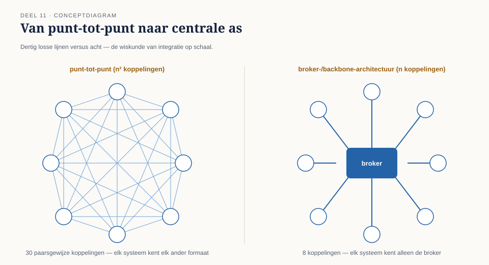

11.0 Van één keten naar een landschap
Sectie 1 van 7Niveau 1 loste één probleem grondig op: de mutatieketen tussen Werkgeversportaal, KERN en de externe pensioenadministrateur. Negen delen, negen patronen, één ontwerp dat de capstone van deel 10 overtuigend doorstond.
Zes weken later kreeg Caspar een heel andere opdracht. Het Programma Mutatieplatform ging van start: een programma dat niet één koppeling herbouwt, maar het volledige applicatielandschap van Meridiaan herstructureert rond een gemeenschappelijk mutatiemechanisme. KERN, het Werkgeversportaal, het Nabestaandenloket, de Wegwijzer, twee externe pensioenadministrateurs (de tweede vanwege de eerdere deelfusie) en, naar verwachting, binnen twee jaar nog vier of vijf systemen — allemaal moeten ze mutaties kunnen versturen, ontvangen, of allebei.
Caspars eerste ontwerp herhaalde, systeem voor systeem, het patroon uit niveau 1: voor elk paar systemen een eigen kanaal, een eigen router waar nodig, een eigen translator waar nodig. Bij acht systemen bleek dit al twintig tot dertig afzonderlijke punt-tot-puntkoppelingen te vergen — en dat aantal groeit kwadratisch met elk nieuw systeem. Het architectuurboard, dat de eerste versie van dit ontwerp zag, stelde een vraag die niveau 1 nooit had hoeven beantwoorden: is de vorm die op één keten werkte, ook de juiste vorm op landschapsschaal?

Dit deel behandelt drie architectuurstijlen op landschapsniveau, en wanneer welke past — niet als vervanging van de patronen uit niveau 1 (die blijven onverkort gelden binnen elke individuele koppeling), maar als een laag erboven: hoe die koppelingen zich tot elkaar verhouden.